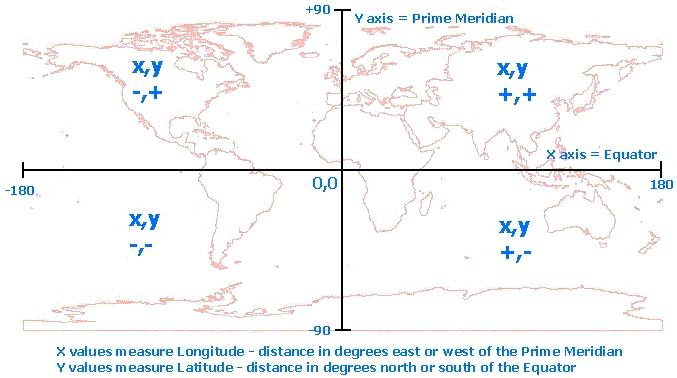
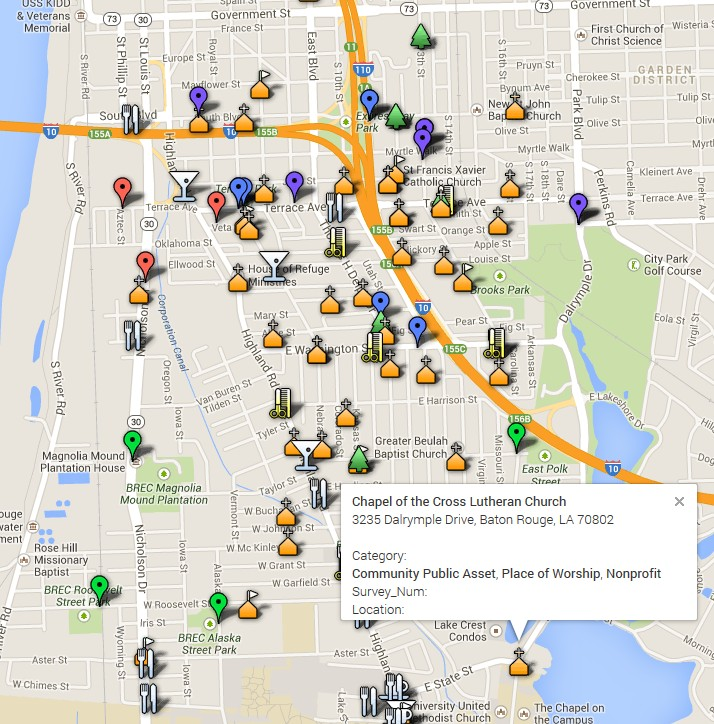
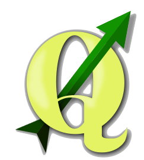

Open Source GIS
No-cost tools to free your data and aid in decision making.
Decision Making
In any moment of decision, the best thing
you can do is the right thing.
The worst thing you can do is nothing.
-- Theodore Roosevelt
My Background...
- 1991 - First learned about GIS at LSU's CADGIS lab with Ferrell Jones and Dennis Fehler
[ Intergraph ERDAS ]
- '92-'93 - Moved upstairs to Dr. Dan Earle's MODE lab [ MapGrafix & FoxPro ]
- '95 - Finished my thesis (a GIS topic) and Graduated... yay!
- '97 - Trip to Huntsville for "Foundations" training [ Intergraph MGE & MicroStation & GeoMedia ]
- '99 - 2010 - Learned basic ESRI products [ ArcView, ArcGIS Desktop ]
- Present - Franklin Associates, LLC
Licensing cost for commercial software is generally an excellent value. But...
ArcGIS Basic single user is $1,500
Intergraph GeoMedia Essentials is $2,500
What if you can't afford it?
What if your agency cannot justify it?
Must you do without?
What to do?
Open-Source to the Rescue!
( And no-cost cloud services too. )
Agenda
Open Source and Cloud-Based GIS as Decision Support Tools
- Basic Pin Maps using Cloud-Based (formerly Web 2.0) Tools
- Categorized Pin Maps using advanced (or under publicized) techniques
- Cadastral Maps using Open-Source Desktop GIS applications
- Lagniappe...
Of course you get free extras! 
Disclaimer
This presentation is incomplete.
- I don't know it all. There are OODLES of apps and services.
- I can't fit what I do know into 20 minutes.
Don't worry about taking notes.
This entire presentation is online right now.
Pin Mapping
(Simple Address GeoCoding)
Google Maps
Typically enter address points one at a time.
James' Bucket List example.
Live Action!
ZeeMaps
A Cloud-Based service running atop Google Maps
No-cost basic user accounts
Got a list of addresses? Make a pin map!
Geocoding
A process that converts addresses to x,y coordinates
For us:
Latitude is the Y axis
Longitude is the X axis
Bulk Geocoding
A process of generating x,y coordinates from an uploaded list of addresses
Google Fusion Tables - works for small lists
GPS Visualizer - faster for long lists
Live Action!
Correcting Mistakes
Geocoding does not always get the location right.
Does the mapping service allow you to individually correct mapped points?
Drag-and-Drop, correct locations on the fly.
Results
Franklin Associates Project Experience Map
- Spatial Portfolio of Projects
- Geocoded to City, State
Live Action!
More Results
Bayou Health Roll-Out
- Public Outreach Events for LA DHH
In communities across the state
We used pin mapping to assign events to staff resources.
GeoCoding Types
From most specific to least specific:
- Physical Street Address - 1414 Big Tree Road, Neptune Beach, Florida
- Zip Code - 32266
- City, State - Neptune Beach, Florida
- State - Florida
Categorized Pin Maps
Color-Coded Pins or Unique Icons
For Categorized Data Sets
Pre-Planning Required
Suggestions:
- Limit the number of categories. 7 is the magic maximum number. More than 10 is too many.
See Apple Computer's "Human Interface Design Guidelines". - Determine the desired category colors or icons now, before you map the data.
- Why? Your table will contain a field (column) with the precise names of Google Map's icons.
- How? ReCoding to a "marker" field. Use Excel formulas or sort function to aid in populating
your marker field based on values in category field. - Save, then export as CSV or tab delimited text file. Avoid spaces in file names.
ReCoding Categories
Data ReCoding - The bulk of the work occurs in a spreadsheet or database environment before you map the data. Use Microsoft Excel or Libre Office Calc.
Essentially, you are simplifying the categories into easily understood groups.
Example Icons
Google Map Icons
Each icon has its own unique name.
This name is used in the table.
Map It!
Import the data set into ZeeMaps:
Lafayette Horse Farm Park Outreach [ZeeMap]
Florida Projects Portfolio [Google Fusion Tables]
Add a Boundary
What if you need to map an area rather than a point location?
- Obtain your boundary layer as a KML (keyhole markup language) file.
How?
- Create (or obtain) a polyline shapefile.
- Export it as a KML file.
Using what? I don't own ArcGIS...
- Sit tight. I'll get there.
Boundary Example
Old South Baton Rouge Target Area [ ZeeMap ]
Boo. Hiss. - Boundaries are red lines.
You cannot change them at the free account level.
Customize the Pop-Up!
Add richness to the attributes of your spatial data.
Custom attribute content and HTML formatting.
Include a photo in the pop-up.
Fusion!
Visualize, Combine, Host and Share Your Data Tables
Google Fusion Tables
A specific kind of Google spreadsheet document.
Create a Fusion Table from within your Google Drive account.
(If you've got gmail, you've got Google Drive.)
Import data from Excel, CSV file, or even a shapefile.
Basic Fusion Tables
NOAA Outreach (geocoded by zip code)
Houston-Galveston Area Public Schools (geocoded by street address)
Categorized Fusion Tables
Old South Baton Rouge Cultural Assets Map
- Utilizes Google's 200+ icons
Fusion on 'Roids!
Possible to overlay 2 (or more?) fusion tables to produce a complex map.
- Requires HTML / JavaScript editing, or a wizard.
- Results in an online map product.
Comprehensive Planning in Louisiana (work in progress)
- Based on work by Lynn Mojica, AICP and updated by me.
- Attribute links to copies of planning documents,
aggregated into Google Drive for reliable downloading.
Live Action!
Strengths & Weaknesses
The Good, The Bad and The Ugly...
The Good
- No Cost
- Share Spatial Data Around the World
- Edit and Supplement the Data
- Embed Live Maps in Websites
- (Can be) Mobile Friendly
The Bad
- Poor to No Legends
- Advertisements appear (ZeeMaps)
- Poor Reporting Capabilities
- Low Resolution Hard Copy Maps,
unless you pay per print
The Ugly
- Simple Marker Shapes and Colors
- Gaudy Icons
- Your Data is now Public!
If you're not paying for the product,
you are the product.
--Derek Powazek
Author of "Design for Community: The Art of Connecting Real People in Virtual Places (2001)
So what do you do?
Desktop Open-Source GIS
Quantum GIS & Open Jump GIS
QGIS 2.0
- Similar to ArcView Desktop
- Powerful plugins extend functionality
- Projections can be tricky...
NAD 1983 LA So. FT HARN, WGS, etc. - Make sure you know the correct projection of your shapefiles from the source(s).
- "On the Fly" reprojection does exist, but seems a little buggy.
- www.qgis.org
Screenshot
QGIS Output
These observations are based on my experience. If you disagree please tell me your secret!
- Hard copy map out is functional, but still a little goofy.
- PNG output still not working (a vector graphic product would be really nice)
- Raster backgrounds (Google aerial) comes out of register when printing.
- Determining printed scale is a challenge (for me).
Output
Parcel Mapping Example
Old South Baton Rouge Community Dreaming
Analyzing ownership and use of parcels - driving decisions and redevelopment plan recommendations.
- What lots are available? Vacant?
- Who owns what? Aggregate contiguous properties?
- Which are publicly owned?
- How big is _that_ area?
- Which are tax adjudicated? (linked to Tax Roll)
Live Action!
Output
Open Jump GIS
- Tighter, cleaner interface than QGIS
- Reminds me of ArcView 3.2
- Simpler controls, but less powerful than QGIS
- Fully Open Source, Java based, no install required!
- www.openjump.org
Screenshot
Lagniappe
A little something extra...
Cloud-Based GIS Services
Most of these are paid services, but some offer a no cost "basic" tier or trial use period.
Personal Cloud GIS Server
Using a combination of open source software and a shared hosting account you can create a low cost, robust, expandable spatial data management system.
Appropriate for local government, agencies, consultants, and non-profits.
- OpenGeo Suite: GeoServer, PostGIS, WebCache, OpenLayers
- Amazon EC2 virtual server
No costs for software licensing. Support available for purchase.
Time Flies...
Time flies. Time marches on.
Time works wonders, and Time will tell.
It also runs out.
--Kathryn Alesandrini
Author of "Survive Information Overload:
The 7 Best Ways to Manage Your Workload by Seeing the Big Picture" (1992)
Don't Overdo It.
These tools are powerful, but they can easily lead to analysis paralysis.
Data is important as a basis for justifying decisions.
It is not a replacement for strong ethics and sound judgment.
Ever notice that
'what the hell'
is always the right decision?
-- Marilyn Monroe
Play it Again...
http:// learn.franklinassoc.com
Thank you for your attention. James Taylor, AICP
Created with FlowTime.js presentation framework at www.slidecaptain.com